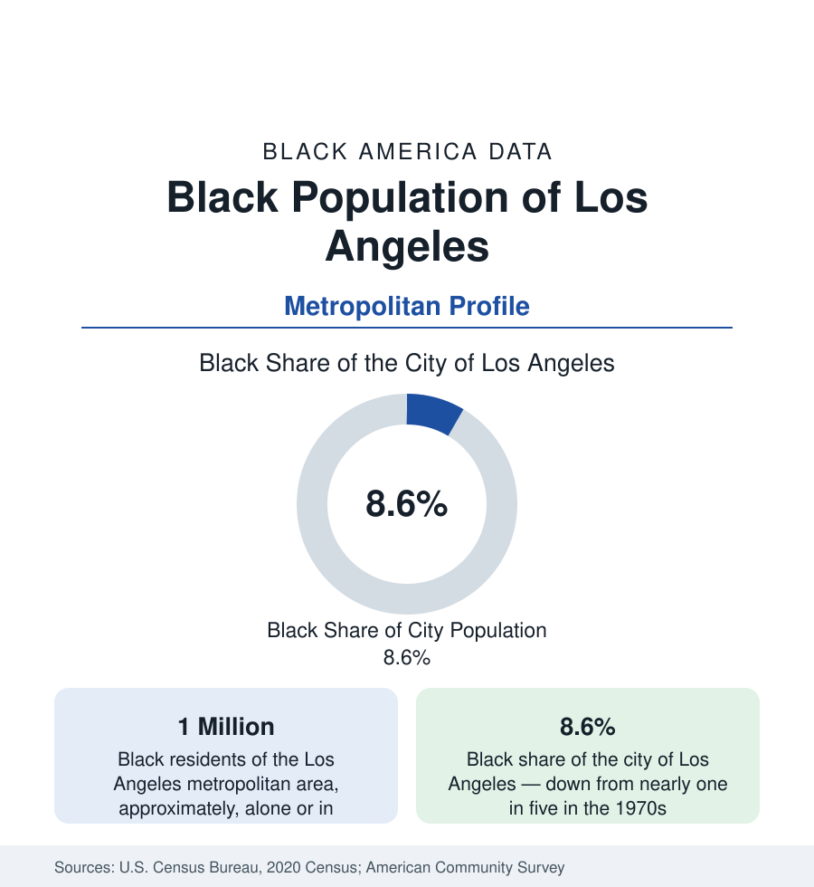

Black Cities
Black Los Angeles: From South Central to the Inland Empire
The Los Angeles metro holds close to a million Black residents — a shrinking share of a vast region, dispersing from historic South Los Angeles to the Inland Empire. The census profile.

Los Angeles holds close to a million Black residents across its metropolitan area, but its defining statistic is a share in long decline: Black Angelenos were nearly one in five city residents in the 1970s and are about 8.6 percent of the city today. The population has not vanished — it has dispersed, to the Inland Empire, the Antelope Valley, Las Vegas, and the South — while Los Angeles itself has become a plurality-Latino and increasingly Asian metropolis. This article profiles what the census records as one of the most consequential redistributions in Black urban America.
South Los Angeles: The Historic Core
The community the nation once knew as South Central — formally renamed South Los Angeles by the city — was built by the Great Migration's western stream: defense workers, railroad families, and Southern migrants who settled the flatland grid east of the hills and, restricted by covenants from most of the city, built a complete Black metropolis within it. Central Avenue's jazz corridor, the churches, the businesses of Crenshaw and Leimert Park — the last of these still the cultural center of Black Los Angeles — are its institutional remains. Watts, Florence-Firestone, Willowbrook, and the unincorporated county communities around them remain majority or plurality Black in many tracts, even as the wider district's population has become majority Latino across recent census cycles.
Inglewood, Compton, and the South Bay
The independent cities of the southern plain record the transition in its sharpest local forms. Inglewood, about two-fifths Black with a large Latino population, has been transformed by stadium and arena development into one of the most watched gentrification cases in the census data. Compton — in Black cultural memory a byword for Black Los Angeles — is now majority Latino, its Black share fallen below a third, a change that arrived within a single generation. Long Beach, the region's second city, holds a Black population near an eighth of its people, with deep roots in the Navy economy. The direction of Black settlement in the basin has meanwhile run east and north: to the Inland Empire's Moreno Valley, Rialto, and Fontana, and to Lancaster and Palmdale in the Antelope Valley, where Black homebuyers traded the basin's prices for desert space, in the pattern the California state profile documents.
Composition
Black Los Angeles in the survey data shows the wide spread characteristic of the coastal metros: some of the highest-income Black communities in the nation — the Baldwin Hills and View Park districts, the so-called Black Beverly Hills, among the most affluent predominantly Black neighborhoods in America — within miles of tracts recording the state's hardest poverty indicators. The population is predominantly native-born and Southern-rooted, with smaller Caribbean and African immigrant communities than the eastern gateways. Entertainment and media give Black Los Angeles a cultural weight vastly beyond its demographic share, which the population data alone would never predict — a standing caution of this section against reading cultural prominence as population scale.
Reading the Los Angeles Numbers
Altadena, Pasadena, and the Valley
Beyond the basin's southern plain, the region's Black geography includes communities of a different character. Altadena, in the foothills above Pasadena, became in the twentieth century one of the nation's notable concentrations of Black homeownership — a community where Black families excluded from Pasadena's housing market bought land and built at high rates, producing ownership levels and an artistic and professional community of lasting record. Pasadena itself holds an old Black community in its northwest. In the San Fernando Valley, Pacoima is among the Valley's oldest Black settlements. These foothill and valley communities, smaller than the South Los Angeles core, record some of the strongest Black economic indicators in the region and complete the metropolitan map.
Los Angeles is the profile where the city, metro, and state figures must be quoted with the most care in this entire section. The city figure — about 340,000 Black residents, 8.6 percent — describes a community in demographic retreat within its historic home. The metro figure — approaching a million — describes a population that largely remains, redistributed across a vast region. And the flow figures describe continued net departure toward Texas, Nevada, Arizona, and the South. All three are the census record of Black Los Angeles, and the profiles of its districts in this section keep them separate.
More in Black Cities
Black Atlanta: Population, Distribution, and Growth of a Black Metropolis
Metro Atlanta holds more than two million Black residents — roughly one in three, second only to New York. The suburban distribution, migration history, and composition of Black Atlanta in the census data.
Black New York: The Largest Black Population in America
The New York metropolitan area holds about 3.4 million Black residents — more than any metro in the nation — and the city itself about two million. The census profile.
Black Washington: The District and the Metro
The Washington metro holds about 1.6 million Black residents, and the District itself — long a majority-Black city — now records a Black share near 41 percent. The census profile.
Source: U.S. Census Bureau, 2020 Census; American Community Survey; Population Estimates Program.